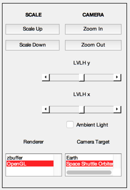

Simulate the space shuttle model.
We rotate the shuttle bay doors and the attached robot arm using the body hinge structure of the CAD model. The shuttle model is loaded from a mat-file. This script shows how to interact with DrawSCPlugIn in a simulation loop. ------------------------------------------------------------------------ See also DrawSCPlugIn, QLVLH, QPose, StopGUI, RK4, JD2000, El2RV ------------------------------------------------------------------------
Contents
%-------------------------------------------------------------------------- % Copyright (c) 1999 Princeton Satellite Systems, Inc. % All rights reserved. %--------------------------------------------------------------------------
Constants
%----------
degToRad = pi/180;
Global for the time GUI
%------------------------ global simulationAction simulationAction = ' '; g = load('ShuttleModel');
Initialize the orbits
%----------------------
[r1,v1] = El2RV( [7000 61*degToRad 0 0 0 0]);
x1 = [r1;v1];
t = 0;
jD = JD2000;
Initialize the 3D window
%------------------------- g = SetCADQuaternion( g, QLVLH( r1, v1 ) ); g = SetCADState( g, r1, v1 ); g.name = 'Space Shuttle Orbiter'; tag3DWindow = DrawSCPlugIn( 'initialize', g, [], [], 'Earth', jD ); dTSim = 1;
Generate the two orbits using numerical integration
%---------------------------------------------------- doorAngle = 0; rMSAngle = 0; StopGUI( 'Space Shuttle' ); rMSAxis = [3 2 2 2 2]; while t<120 % Transformation matrices %------------------------ g = SetCADQuaternion( g, QLVLH( x1(1:3), x1(4:6) ) ); g = SetCADState( g, x1(1:3), x1(4:6) ); if( doorAngle > -139 ) doorAngle = doorAngle - 1; elseif( rMSAngle < 45 ) rMSAngle = rMSAngle + 1; end g = SetCADRotation( g, 'body', 2, 'axis', 1, 'angle', doorAngle*pi/180 ); g = SetCADRotation( g, 'body', 3, 'axis', 1, 'angle', -doorAngle*pi/180 ); for j = 1:5 g = SetCADRotation( g, 'body', j+3, 'axis', rMSAxis(j), 'angle', -rMSAngle*pi/180 ); end DrawSCPlugIn( 'update spacecraft', tag3DWindow, g, jD ); % Propagate the orbits %--------------------- x1 = RK4( @FOrbCart, x1, dTSim, t, [0;0;0] ); % Update the time %---------------- t = t + dTSim; jD = jD + dTSim/86400; % Time control %------------- switch simulationAction case 'pause' pause simulationAction = ' '; case 'stop' return; case 'plot' break; end end %--------------------------------------